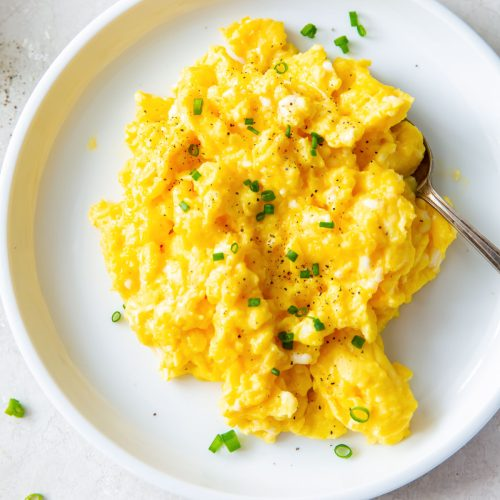

How to Make: Scrambled Eggs
Have you ever made scrambled eggs, but they turned out to be
too watery or too firm? The recipe and instructions below will
help you produce some of the tastiest scrambled eggs that will
complement your breakfast perfectly.

Ingredients:
- 6 eggs
- 1 tbsp unsalted butter
- 1/4 cup heavy cream or milk
- 1/2 cup of your favorite shredded cheese
- garlic salt and black pepper
Instructions:
-
Step 1: Crack all the eggs into a
cold pot, add the heavy cream, butter, and beat lightly. We want the eggs to be nicely
incorporated but without overly aerating the mixture.
-
Step 2: Place the pan over low-medium heat. Using a spatula, scramble
the mixture making sure to lift any egg that has set on the bottom of the pot. Continue
this process every 30 seconds to a minute until the scrambled eggs start to take a
slightly firm consistency. If the eggs begin to set too quickly, feel free to move the
pot off of the heat and continue stirring.
-
Step 3: Once the scrambled eggs have started to set, add all of the
cheese into the pot. Continue to stir the eggs until it is slightly below the
desired consistency.
-
Step 4: Add the garlic salt and black pepper to desired taste and
immediately remove from heat. Transfer all the eggs into a serving bowl and let sit for
3-5 minutes. If timed properly, the residual heat will finish cooking the eggs in the bowl.
-
Step 5: Serve and enjoy!